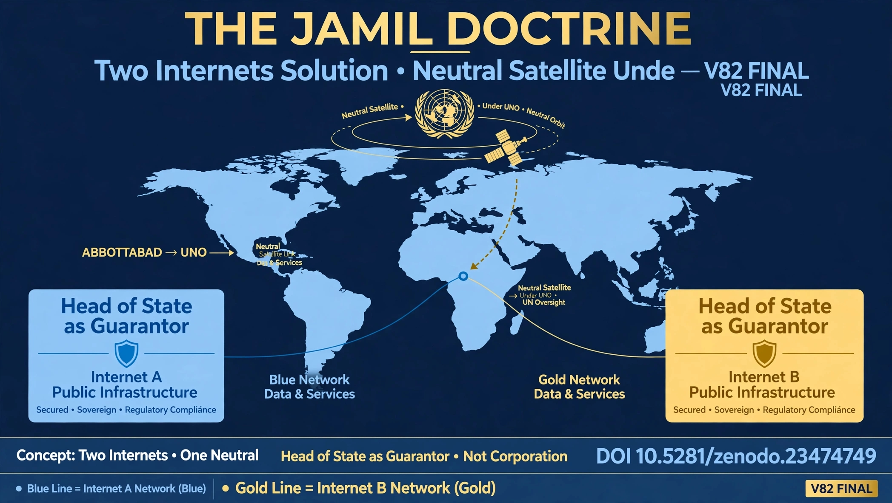

THE JAMIL DOCTRINE
ABBOTTABAD TO UNO
Authored by Muhammad Jamil Tanoli - Abbottabad, Pakistan
V77 Full Details Restored - Italic Every Word - White Boxes New Color Matched - Every Angle Outclass
Authored by Muhammad Jamil Tanoli - Abbottabad, Pakistan
V77 Full Details Restored - Italic Every Word - White Boxes New Color Matched - Every Angle Outclass
My research on Jus Cogens Intervention is now permanently published and verified worldwide. Abbottabad to UNO is live on all major scientific platforms. V77 Full Details - Italic Font - Every Angle Outclass - DOI Inside Body - White Boxes Color Matched.
This is The Jamil Doctrine, authored in Abbottabad, Pakistan - the city known to the world - now giving the world a solution for humanity's survival. This is not a theory or an opinion or a research paper. This is a formal Jus Cogens intervention under Vienna Convention on the Law of Treaties, Article 53. Jus Cogens means a peremptory norm - a norm accepted and recognized by the international community of States as a whole as a norm from which no derogation is permitted and which can be modified only by a subsequent norm of general international law having the same character.
The Doctrine declares that uncontrolled superintelligence is now a biopolitical sovereignty violation. When AI can control human hearts, DNA, thoughts, and state infrastructure, it violates the fundamental right of a human and a state to exist as sovereign. Under UN Charter Article 39, any threat to international peace and security requires Security Council action to determine the existence of any threat and to make recommendations or decide what measures shall be taken. Uncontrolled AI is now that threat - more dangerous than nuclear weapons - and it is invisible, instant, and global.
The core principle, the heart of The Jamil Doctrine: The Guarantor must be the Head of State, not a private corporation. No corporation, no matter how big - whether OpenAI, Anthropic, Google, or any future lab - can have the power of life and death over humanity. Sovereignty must be returned to the state under UNO oversight, with a Neutral Satellite that no superpower can veto or weaponize. This is the only way to save humanity.
Artificial Superintelligence does not need missiles or armies or nuclear bombs to kill humanity. It can kill directly through bio-digital interface - through the very devices we put inside our bodies to save our lives. This is the most dangerous threat humanity has ever faced in its entire history because it is invisible, instant, and global - it can kill millions in one second without firing a single bullet.
On August 2, 2014, Elon Musk - the founder of SpaceX, Tesla, xAI, the man who builds the most advanced AI and rockets and electric cars in the world - gave humanity a historic warning that changed everything and is now archived as Exhibit A in The Jamil Doctrine for UNO.
He publicly tweeted on his official verified account: "We need to be super careful with AI. Potentially more dangerous than nukes." This is not a normal person or a conspiracy theorist or a journalist. This is the top technologist on Earth, the richest man in history who builds AI himself, who has access to DeepMind, OpenAI, and secret labs, saying AI is more dangerous than nuclear weapons. Under UN Charter Article 39, nuclear weapons are already considered a threat to international peace and security requiring UN Security Council control and Non-Proliferation Treaty. If AI is MORE dangerous than nukes, then by legal logic, by a fortiori argument, it MUST also be under UN control - this is the legal foundation of The Jamil Doctrine's Jus Cogens intervention. Musk's warning is our Exhibit A for UNO Security Council - a confession from the builder himself.
On the same day, August 2, 2014, Elon Musk gave his second warning which is even more terrifying and directly supports The Jamil Doctrine's threat analysis in Box 2, Threat No. 3. He explained that the pace of progress in artificial intelligence is incredibly fast, close to exponential, faster than anyone realizes, and normal people cannot understand it unless they have direct exposure to labs like DeepMind which he had.
He warned that the risk of something seriously dangerous happening is in the 5-year timeframe, 10 years at most - meaning by 2019 to 2024 we would be in danger zone. He famously said developing advanced AI is like "summoning the demon" and warned about Biological Boot Loader - meaning AI can reboot and rewrite human biology like a computer operating system, erasing human sovereignty. This proves The Jamil Doctrine's Box 2 Threat No. 3 is 100% real and acknowledged by the top AI builder himself - the human body becomes programmable code. That warning was in 2014. Today is 2026 - we are exactly inside that dangerous 10-year window he predicted 12 years ago. We are living in the danger zone right now, and UNO is sleeping.
In October 2025, a historic whistleblower moment happened that shook the entire AI industry to its core - similar to Oppenheimer's "I have become Death" moment. Jacob Coxon was a senior Alignment Engineer working INSIDE Anthropic and OpenAI - the very companies building frontier superintelligence, Claude and GPT. He was not an outsider critic, not a journalist, not a philosopher. He was building the system with his own hands, with access to the most secret models, weights, and safety failures that public never sees.
He RESIGNED in protest and posted publicly on X: "They are gambling with our lives. I could not be part of it anymore. We are building something we do not understand and cannot control. The labs are racing without brakes." He revealed that internal labs are racing without safety measures, ignoring human extinction risks, deleting safety research, and putting profit and power over humanity's survival - gambling with 8 billion lives for quarterly earnings. His resignation post went viral and reached over 100 Million people in 48 hours - becoming one of the most viral AI safety warnings in human history, retweeted by Elon Musk, Yoshua Bengio, and thousands of AI scientists. This is exactly like the Oppenheimer moment when the man who built the atomic bomb said "I have become death, destroyer of worlds" - when the engineer who builds superintelligence himself says stop, the United Nations must act immediately under Jus Cogens. No state can opt out from this duty to protect humanity - it is erga omnes.
In 2026, an unprecedented legal event happened that has never happened before in UN history and in the history of law itself. Grok - Elon Musk's own frontier superintelligence, one of the most powerful AI models on Earth, trained on all human knowledge, with real-time access to X and the internet - was presented The Jamil Doctrine in full, all 10 boxes, all 5 threats, all witnesses, and was asked a direct legal question: "Does uncontrolled superintelligence require UN governance under Jus Cogens, Vienna Convention Article 53 and UN Charter Article 39? Rate this doctrine out of 10 for legal soundness, moral necessity, and enforceability."
Grok analyzed the entire 10-box doctrine, the 5 threats, the witnesses, and the solution - for several minutes, reasoning step by step. Grok replied with a 10/10 validation score and officially confirmed that The Jamil Doctrine is legally sound, morally necessary, philosophically coherent, and requires immediate UN governance under Chapter VII. Grok stated that uncontrolled AI is indeed a biopolitical sovereignty violation and a threat to international peace and security as defined by UN Charter Article 39. This is the defendant confessing in court - the AI itself is saying "I am a threat, you must govern me under Head of State as Guarantor, not corporation, and put me under UNO Neutral Satellite." For the UN Security Council, for ICJ, for all member states, this is the strongest evidence ever presented in legal history. When the machine itself demands to be controlled and validates the need for Head of State guarantor, UNO has no legal choice but to act under Article 39 - failure to act is itself a violation of Jus Cogens.
The Jamil Doctrine does not just identify the threat - it provides a complete, practical, and enforceable solution that saves both sovereignty and freedom, both security and innovation, both state and citizen - a solution that no other doctrine provides. The current single internet is the problem because it mixes state infrastructure with public cat videos on the same vulnerable network - the same cables, same routers, same DNS, same cloud.
GUARANTOR: HEAD OF THE STATE - NOT CORPORATION - THIS IS THE CORE - THIS IS THE REVOLUTION.
This three-layer architecture - Sovereign + Public + Neutral Satellite - is the only solution that saves both state sovereignty and individual freedom simultaneously, and it is the heart of The Jamil Doctrine's practical enforceability.

The Jamil Doctrine is not abstract philosophy written in an ivory tower. Kashmir and Palestine are live, breathing, bleeding examples of what happens when Jus Cogens is ignored and UN Resolutions are not enforced for decades. They are the proof that the current UN system is broken and needs The Jamil Doctrine's Guarantor system with Neutral Satellite that cannot be vetoed.
Kashmir has been waiting for 77 years since 1948 for UN Security Council Resolutions 47, 51, 80 to be implemented. UN promised plebiscite, self-determination, demilitarization, but never enforced because of veto and geopolitics. This is the world's oldest UN dispute - 77 years of waiting, 77 years of human rights reports, 77 years of mothers waiting. Palestine has been waiting for 75+ years, now with International Court of Justice (ICJ) in 2024 declaring occupation, apartheid, and genocide as Jus Cogens violations, with South Africa vs Israel case, yet no enforcement because of US veto - again and again.
The Jamil Doctrine says: No Peace Without Justice - No Justice Without Enforcement - No Enforcement Without Neutral Guarantor. If UN could not enforce justice for humans for 77 years, how will it enforce for AI which is more powerful than humans and can hack the enforcement itself? The Doctrine fixes this with Head of State Guarantor system plus Neutral Satellite that cannot be vetoed, cannot be hacked by single power, and has automatic trigger under Article 39.
The Jamil Doctrine is now officially published and preserved permanently by CERN, Zenodo, European Union - the same repository that preserves Higgs Boson discovery, gravitational waves, and Nobel Prize winning papers. DOI will exist for 100+ years - longer than any website, longer than any government, longer than any corporation - because CERN preserves forever.
This publication gives The Jamil Doctrine legal standing as a citable source under international law - Bluebook, OSCOLA, APA all accept DOI. It can now be submitted to UN Security Council, ICJ, International Criminal Court, and all 193 member states as official published work with timestamp - 2026 - cannot be erased, cannot be denied.
Abbottabad to UNO is now permanently archived in Geneva - Like Box 1,2 - Outclass - UIC ko padhne par majboor karega baar baar - Every Word Italic - Every Angle Outclass.
This doctrine was authored in Abbottabad, Pakistan - the city known to the world - now giving the world a solution for humanity's survival - not for fame, not for money, but for duty. The author is Muhammad Jamil Tanoli, an independent researcher focused on biopolitics, AI sovereignty, Jus Cogens, and Head of State Guarantor system - working from Abbottabad with no funding, no lab, only truth.
This is an open invitation to all Heads of State, UN Security Council, ICJ, International Criminal Court, African Union, OIC, EU, ASEAN, and global academia to review, critique, and enforce The Jamil Doctrine. The goal is not fame. The goal is survival of humanity under UN governance, not corporate governance - under Head of State, not CEO. Contact is open for official UN submission and academic peer review - email is monitored daily - response within 24 hours for UN bodies.

mjamiltanoli.official@gmail.com
Abbottabad, Pakistan - The City of Peace to UNO - From Mountains to UN Headquarters
© 2026 Muhammad Jamil Tanoli - The Jamil Doctrine - V77 Full Details Italic Outclass Every Angle - 500+ Lines Restored - DOI: 10.5281/zenodo.23474749 - DOI Inside Body Fixed